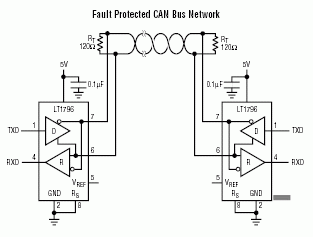

CAN
Controller Area Network (CAN) bus is a two wire serial communication protocol which was originally released at the 1986 Society of Automotive Engineers (SAE) congress in Detroit. The first vehicle to use CAN reduced the weight of its wiring by over 100 pounds. While CAN was originally designed for use in cars to reduce the amount of wiring, the use of CAN has expanded and it can now be found in avionics, hospitals, assembly lines, and even some bicycles and prosthetic limbs.
Some features that make CAN so popular include:
- High speed (up to 1 megabit/second) serial communication over inexpensive twisted pair wiring.
- High noise immunity due to balanced differential signaling.
- Built in message priority which allows higher priority messages to automatically suppress messages of lower priority without any delay in transmission of the higher priority message.
- Guaranteed latency time for high priority messages.
- Automatic synchronization of nodes without a clock signal.
- Communication from 40 meters at 1 megabit per second up to 5 kilometers at 10 kilobits per second (distances will vary depending on bus characteristics).
- Automatic bus arbitration and collision detection and correction.
- Automatic error detection and re-transmission.
- The ability to work even when different nodes have different ground potentials.
- Only two required processor pins (Transmit Data (TD) and Receive Data (RD)).
- Low cost.
CAN bus is generally a two wire bus, but sometimes additional power and ground lines are included requiring four wires.
High speed CAN is set up as a linear bus of 120 ohm nominal twisted pair wiring with two or more nodes. Termination resistors are used at each end of the bus as shown below.

Tip
Some CAN devices including our own development boards have built in termination resistors. If you are using more than two nodes on a high speed CAN bus you must disable the termination resistors on all nodes except for the two end nodes.
Low speed or fault tolerant CAN uses a linear bus, star bus, or multiple star buses. Fault tolerant CAN buses are terminated differently than linear CAN buses and require a termination resistor at each node. The value of these resistors depends on the network but should equal about 100 ohms per CAN line in total.
The TinyCLR CAN Interface
The TinyCLR CAN API provides several methods for sending and receiving CAN messages.
Configuring the bus
Before you can communicate over the CAN bus, the processor needs to know the characteristics of the bus so all nodes can communicate properly.
SetBitTiming() defines the CAN bus timing using the arguments listed below. Due to the complexity of CAN bus timing, CAN bit rate calculators are available online which you may find helpful. Please refer to the processor datasheet for a full description of the following parameters.
The propagation argument is used to compensate for the physical delay times of the network and includes the input comparator delay, the output driver delay and the propagation delay of the bus itself (which is affected by the length of the CAN bus wiring). Propagation uses time quanta as a unit of measurement.
The phase1 argument defines the length in time quanta of the phase one segment. The phase one segment can be automatically lengthened during re-synchronization.
The phase2 argument defines the length in time quanta of the phase two segment. The phase two segment can be automatically shortened during re-synchronization.
The baudratePrescaler argument determines the speed of the CAN system clock.
The synchronizationJumpWidth defines the maximum amount of time quanta a bit period may be lengthened or shortened during each re-synchronization.
When true, useMultiBitSampling will cause the bus to be sampled three times for each bit. Its use is recommended for low to medium speed buses to filter noise on the bus line. For high speed buses it is recommended to set this to false.
In the sample code below the CAN bus is communicating at 1 Megabit per second over a short bus.
Sending CAN Messages
WriteMessage()
WriteMessage() writes a single CAN message. Each CAN message is defined by eight data bytes, an arbitration ID, the length (number of bytes to send), and two Boolean arguments which specify if the transmission is a remote transmission request and whether the message uses an extended arbitration ID. Extended arbitration IDs are 29 bits long, standard IDs are 11 bits long.
WriteMessages()
The WriteMessages() method is used to send an array of CAN messages. The arguments for this function are the array of CAN messages followed by an offset and count integer values. The offset is the array subscript of the first message to send, while count specifies how many messages to send.
Receiving CAN Messages
ReadMessage()
ReadMessage() receives a CAN message and includes the ArbitrationId, IsExtendedId, IsRemoteTransmissionRequest, TimeStamp and Data properties.
Filtering Incoming CAN Messages
SetGroupFilters()
SetGroupFilters() takes two arrays as arguments to set ranges of arbitration IDs that will be accepted. The first array defines the lower bounds of accepted arbitration IDs, while the second array specifies the upper bounds. Both arrays must be the same size. In the sample code below the group filters will accept messages with arbitration IDs ranging from 0x12 to 0x20 and also between 0x500 and 0x1000 inclusive.
SetExplicitFilters()
SetExplicitFilter() takes an array argument which specifies individual arbitration IDs that will be accepted regardless of the group filter settings. In the sample code below, CAN messages with arbitration IDs of 0x11 and 0x5678 will be accepted in addition to the arbitration IDs specified by the group filters.
Sample Code
The following sample code is written for our G120E Dev Board. It requires installation of the GHIElectronics.TinyCLR.Core, GHIElectronics.TinyCLR.Devices and GHIElectronics.TinyCLR.Pins Nuget packages.
using System;
using System.Diagnostics;
using System.Threading;
using GHIElectronics.TinyCLR.Devices.Can;
using GHIElectronics.TinyCLR.Devices.Gpio;
namespace CanExample {
class Program {
static void Main() {
var downButton = GpioController.GetDefault().OpenPin(0);
downButton.SetDriveMode(GpioPinDriveMode.InputPullUp);
var can = CanController.FromId(G120E.CanBus.Can1);
var propagation = 0;
var phase1 = 7;
var phase2 = 4;
var baudratePrescaler = 5;
var synchronizationJumpWidth = 1;
var useMultiBitSampling = false;
can.SetBitTiming(new CanBitTiming(propagation, phase1, phase2, baudratePrescaler, synchronizationJumpWidth, useMultiBitSampling));
var message = new CanMessage() {
Data = new byte[] { 0x48, 0x65, 0x6C, 0x6C, 0x6F, 0x2E, 0x20, 0x20 },
ArbitrationId = (0x11),
Length = 6,
IsRemoteTransmissionRequest = false,
IsExtendedId = false
};
var lowerBounds = new uint[] { 0x12, 0x500 };
var upperBounds = new uint[] { 0x20, 0x1000 };
can.SetGroupFilters(lowerBounds, upperBounds);
var explicitFilter = new uint[] { 0x11, 0x5678 };
can.SetExplicitFilters(explicitFilter);
can.MessageReceived += CanController_MessageReceived;
can.ErrorReceived += CanController_ErrorReceived;
while (true) {
if (downButton.Read() == GpioPinValue.Low)
can.WriteMessage(message);
Thread.Sleep(100);
}
}
private static void CanController_MessageReceived(CanController sender, MessageReceivedEventArgs e) {
sender.ReadMessage(out var message);
Debug.WriteLine("Arbritration ID: 0x" + message.ArbitrationId.ToString("X8"));
Debug.WriteLine("Is extended ID: " + message.IsExtendedId.ToString());
Debug.WriteLine("Is remote transmission request: " + message.IsRemoteTransmissionRequest.ToString());
Debug.WriteLine("Time stamp: " + message.TimeStamp.ToString());
var data = "";
for (var i = 0; i < message.Length; i++)
data += Convert.ToChar(message.Data[i]);
Debug.WriteLine("Data: " + data);
}
private static void CanController_ErrorReceived(CanController sender, ErrorReceivedEventArgs e) => Debug.WriteLine("Error " + e.ToString());
}
}